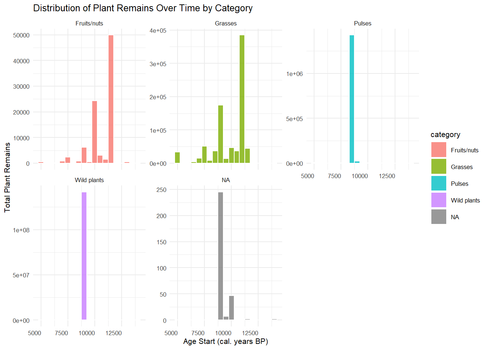
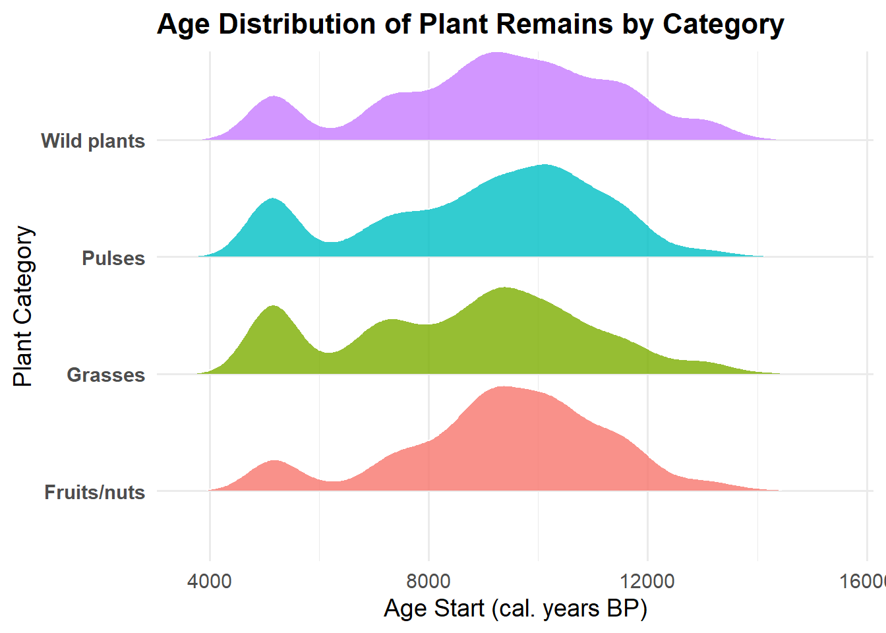
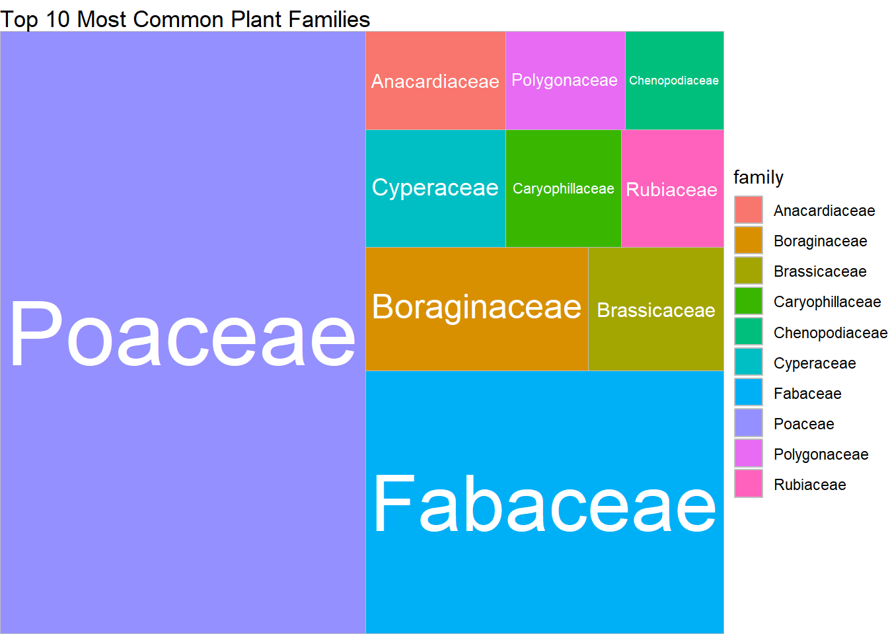
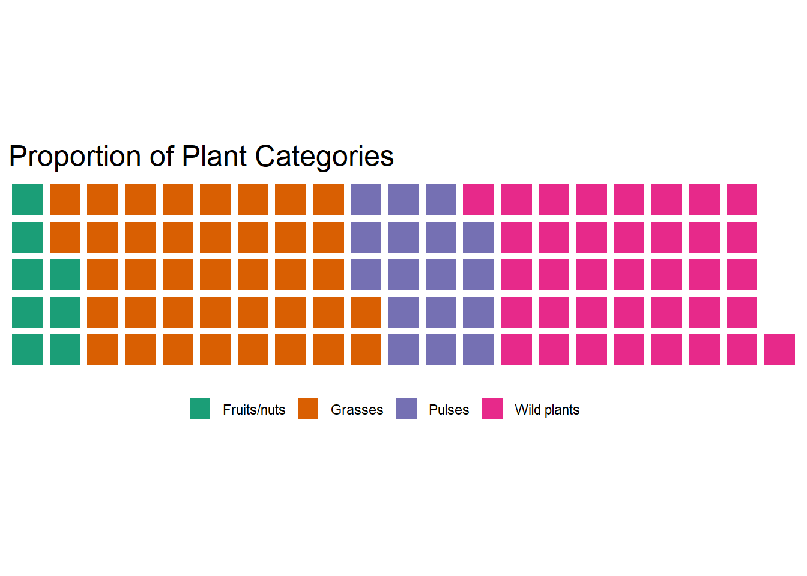

Home Work 10 - Advanced ggplotting
Vincent Tamakloe
2025-05-07
Package Installation
Loading Packages
## Warning: package 'tidyverse' was built under R version 4.3.3## Warning: package 'ggplot2' was built under R version 4.3.3## Warning: package 'lubridate' was built under R version 4.3.3## ── Attaching core tidyverse packages ──────────────────────── tidyverse 2.0.0 ──
## ✔ dplyr 1.1.4 ✔ readr 2.1.5
## ✔ forcats 1.0.0 ✔ stringr 1.5.1
## ✔ ggplot2 3.5.1 ✔ tibble 3.2.1
## ✔ lubridate 1.9.4 ✔ tidyr 1.3.1
## ✔ purrr 1.0.2
## ── Conflicts ────────────────────────────────────────── tidyverse_conflicts() ──
## ✖ dplyr::filter() masks stats::filter()
## ✖ dplyr::lag() masks stats::lag()
## ℹ Use the conflicted package (<http://conflicted.r-lib.org/>) to force all conflicts to become errors## Warning: package 'ggthemes' was built under R version 4.3.3## Warning: package 'ggridges' was built under R version 4.3.3## Warning: package 'treemapify' was built under R version 4.3.3## Warning: package 'waffle' was built under R version 4.3.3## Warning: package 'patchwork' was built under R version 4.3.3## Warning: package 'cowplot' was built under R version 4.3.3##
## Attaching package: 'cowplot'
##
## The following object is masked from 'package:patchwork':
##
## align_plots
##
## The following object is masked from 'package:ggthemes':
##
## theme_map
##
## The following object is masked from 'package:lubridate':
##
## stampLoad Data from GitHub
founder <- read_csv("https://raw.githubusercontent.com/rfordatascience/tidytuesday/master/data/2023/2023-04-18/founder_crops.csv")## Rows: 4490 Columns: 24
## ── Column specification ────────────────────────────────────────────────────────
## Delimiter: ","
## chr (18): source, source_id, source_site_name, site_name, phase, phase_descr...
## dbl (6): latitude, longitude, age_start, age_end, n, prop
##
## ℹ Use `spec()` to retrieve the full column specification for this data.
## ℹ Specify the column types or set `show_col_types = FALSE` to quiet this message.## Rows: 4,490
## Columns: 24
## $ source <chr> "ORIGINS", "ORIGINS", "ORIGINS", "ORIGINS", "ORIGINS…
## $ source_id <chr> "16433–16433", "12007–12249", "12013–12298", "11956–…
## $ source_site_name <chr> "Ayn Abu Nukhayla", "Abu Hureyra", "Abu Hureyra", "A…
## $ site_name <chr> "Ayn Abu Nakhayla", "Abu Hureyra", "Abu Hureyra", "A…
## $ latitude <dbl> 29.84, 35.87, 35.87, 35.87, 35.87, 35.87, 35.87, 35.…
## $ longitude <dbl> 35.24, 38.40, 38.40, 38.40, 38.40, 38.40, 38.40, 38.…
## $ phase <chr> "PPNB", "Abu Hureyra 1 (epipalaeolithic) phase 1", "…
## $ phase_description <chr> NA, "Dates approximated from Colledge & Conolly 2010…
## $ phase_code <chr> "AANU PPNB", "ABHU Epip1", "ABHU Epip1", "ABHU Epip1…
## $ age_start <dbl> 9578, 13096, 13096, 13096, 13096, 13096, 13096, 1309…
## $ age_end <dbl> 9401, 12984, 12984, 12984, 12984, 12984, 12984, 1298…
## $ taxon_source <chr> "Gypsophila", "Alyssum", "Arenaria serpyllifolia", "…
## $ n <dbl> 1, 6, 18, 184, 21, 15, 12, 42, 3, 3, 3, 6, 22, 234, …
## $ prop <dbl> 0.5000000000, 0.0010398614, 0.0031195841, 0.03188908…
## $ reference <chr> "HenryEtal03", "MooreEtal2000", "MooreEtal2000", "Mo…
## $ taxon_detail <chr> "Gypsophila sp.", "Alyssum sp.", "Arenaria serpyllif…
## $ taxon <chr> "Gypsophila spp. (incl. elegans, obionica, pilosa)",…
## $ genus <chr> "Gypsophila", "Alyssum", "Arenaria", "Arnebia", "Arn…
## $ family <chr> "Caryophillaceae", "Brassicaceae", "Caryophyllaceae"…
## $ category <chr> "Wild plants", "Wild plants", "Wild plants", "Wild p…
## $ founder_crop <chr> NA, NA, NA, NA, NA, NA, NA, NA, NA, NA, NA, NA, NA, …
## $ edibility <chr> NA, NA, NA, NA, NA, "stems", "rhizomes, stems and le…
## $ grass_type <chr> NA, NA, NA, NA, NA, NA, NA, NA, "Large/medium-seeded…
## $ legume_type <chr> NA, NA, NA, NA, NA, NA, NA, NA, NA, NA, NA, NA, NA, …1. Ridgeline Plot – Age Distribution of Plant Categories
founder_ridge <- founder %>%
filter(!is.na(age_start), !is.na(category))
p1 <- ggplot(founder_ridge, aes(x = age_start, y = category, fill = category)) +
geom_density_ridges(scale = 0.9, alpha = 0.8, color = "white", rel_min_height = 0.01) +
theme_minimal(base_size = 14) +
theme(
legend.position = "none",
plot.title = element_text(size = 16, face = "bold"),
axis.text.y = element_text(face = "bold")
) +
labs(
title = "Age Distribution of Plant Remains by Category",
x = "Age Start (cal. years BP)",
y = "Plant Category"
)
p1## Picking joint bandwidth of 472
## Picking joint bandwidth of 4722. Histogram – Distribution of Plant Remains Over Time by Category
p2 <- ggplot(founder, aes(x = age_start, weight = n, fill = category)) +
geom_histogram(binwidth = 500, alpha = 0.8, color = "white") +
facet_wrap(~ category, scales = "free_y") +
theme_minimal(base_size = 8) +
theme(
axis.text.x = element_text(angle = 0, hjust = 1)
) +
labs(
title = "Distribution of Plant Remains Over Time by Category",
x = "Age Start (cal. years BP)",
y = "Total Plant Remains"
)
p2
3. Treemap – Top 10 Most Common Plant Families
top_families <- founder %>%
filter(!is.na(family)) %>%
count(family, sort = TRUE) %>%
top_n(10, n)
p3 <- ggplot(top_families, aes(area = n, fill = family, label = family)) +
geom_treemap() +
geom_treemap_text(colour = "white", place = "centre", grow = TRUE) +
theme_void() +
labs(title = "Top 10 Most Common Plant Families")
p3
4. Waffle Plot – Proportion of Plant Categories
category_counts <- founder %>%
filter(!is.na(category)) %>%
count(category) %>%
mutate(pct = round(n / sum(n) * 100))
parts <- category_counts$pct
names(parts) <- category_counts$category
p4 <- waffle(parts, rows = 5,
colors = c("#1b9e77", "#d95f02", "#7570b3", "#e7298a"),
title = "Proportion of Plant Categories",
legend_pos = "bottom")
p4
5. Exporting All Plots in a Combined Figure (Optional)
## Picking joint bandwidth of 472
## Picking joint bandwidth of 472
